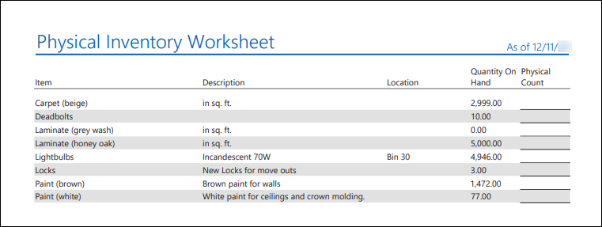
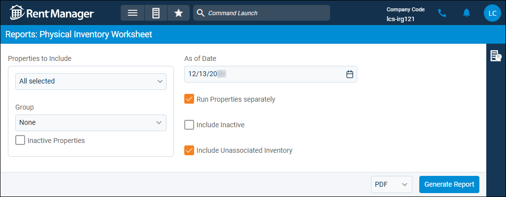

Source: https://rmxhelp.rentmanager.com/Topics/Express/Other/Reports/Physical-Inventory-Worksheet.htm
Physical Inventory Worksheet (Report)
The Physical Inventory Worksheet report lets you compare your physical inventory count to your count in Rent Manager. The report lists the inventory items you selected to track in Rent Manager and the current inventory totals according to your Rent Manager records. The report also includes a blank line where you can record your physical item count.
Related Privileges
| Group | Privilege | Column |
|---|---|---|
| Letter/Email Templates/Reports/Packets | Run reports | Enabled |
Additionally, on the Reports tab, you must have access to Physical Inventory Worksheet.
For more information, refer to Control User Access.
More Information
For an inventory item to display in this report, the following options must be set on the item's details page:
-
On the item's Inventory tile, Track Inventory must be checked.
-
On the item's Miscellaneous tile, Active Item must be checked. If the item is not active, it only displays in the report if the Include Inactive report option is selected.
-
On the item's Inventory Transactions tile, the inventory must have been increased or decreased via a transaction.
To view the Physical Inventory Worksheet report, do the following:
-
Go to
 arrow_forward Accounting arrow_forward PO/Inventory arrow_forward Physical Inventory Worksheet.
arrow_forward Accounting arrow_forward PO/Inventory arrow_forward Physical Inventory Worksheet.
The Reports: Physical Inventory Worksheet page displays. -
Adjust the report options as desired. Each option is described below.
-
Generate the report in your desired file format(s).
Related Preferences
Reports may look different depending on whether or not the Use modernized report style system preference is enabled. For more information, refer to General Report Options (System Preferences).

Report Options
The report options described below determine what data displays in the report.
Related Preferences
Different report options display depending on your settings in system preferences. The report options page for this report displays only the As of Date and Include Inactive options when Track inventory by Property is not enabled. When inventory is being tracked by property, all report options can be modified. For more information, refer to P.O./Inventory (System Preferences).

Properties to Include
Select each property or a property Group to be included in the report.
More Information
This field populates only with the properties to which you have access. Your access to properties can be managed from your user account or on the property's details page. For more information, refer to Limit Access to a Property.
Optionally, check Show Inactive Properties to include properties that are no longer active.
As of Date
Rent Manager examines relevant report information as of (up through) the date entered to determine the data that displays in the report.
Run Properties Separately
Check to generate a separate report for each selected property. Otherwise, all selected properties are combined into a single report.
Include Inactive
Check to display inventory items that have Active Item unchecked on the Inventory Item details page.
Include Unassociated Inventory
Include inventory items that do not have a transaction linked to a property. Inventory items are considered unassociated if the item's quantity was manually increased or decreased but a property was not selected.
Warning
If you change the Track inventory by Property system preference, all property associations are deleted from inventory transaction history. If you increased inventory via purchase orders while Track inventory by Property was not active, even if those purchase orders have property links, after you activate Track inventory by Property, those purchase orders are not linked to the inventory item for the purposes of this report.
Report Results
The report results are described below including, if applicable, section, column, and subreport descriptions.
Report Header
The report header displays the report name and key information selected in the report options, such as date information and which properties were examined in the report.
Column Descriptions
The columns that display in the report are described below.
| Column | Description |
|---|---|
|
Item |
The name of the inventory item as entered on the item's details page in the Name field. |
|
Description |
Additional details about the inventory item as entered on the item's details page in the Description field. |
|
Location |
A note about the physical location of the item as entered on the item's details page in the Location field. |
|
Quantity On Hand |
The total number of the item you currently have in stock. To track the quantity of an item on hand, on the item's details page, check Track Inventory. Inventory is increased or decreased when you process transactions related to this inventory item. |
|
Physical Count |
After you print the form, enter your physical count in this blank field. |